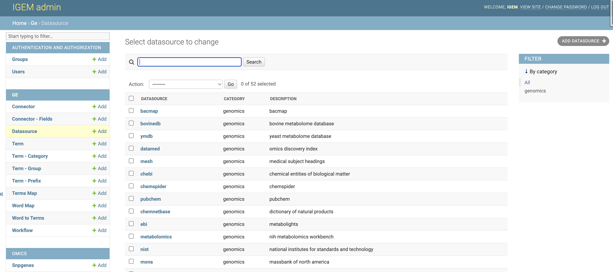
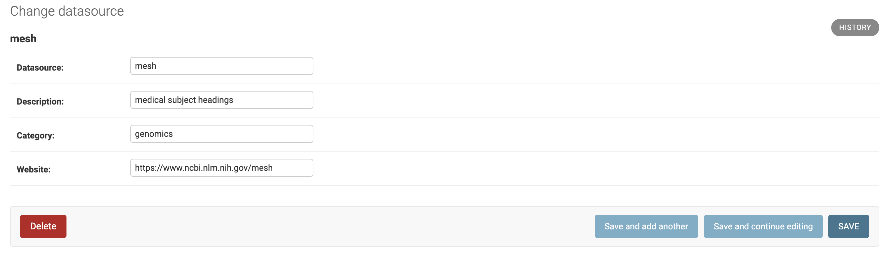
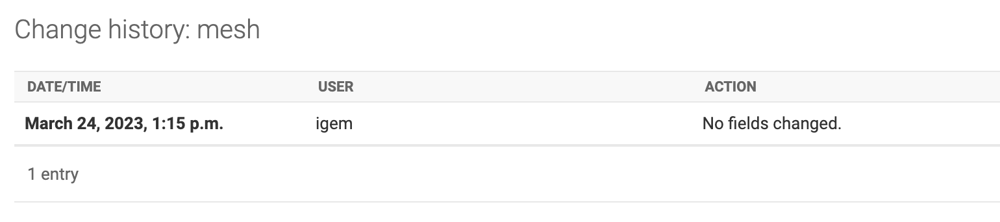
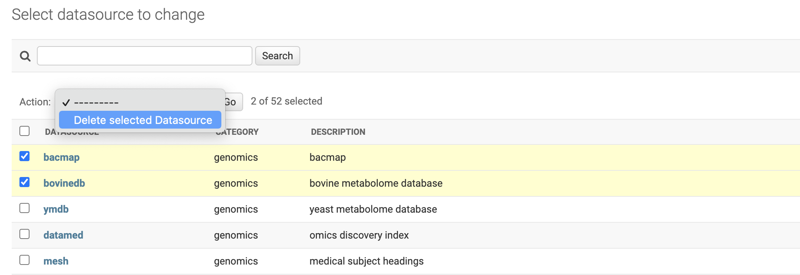

Datasource
Datasource master data refers to an external data source and groups of Connectors over the same domain. The connection between IGEM and external data sources will be established by Connectors.
Datasource is used for selecting and grouping queries and future security and authentication features.
The Datasource data will be stored in the ge_datasource table of the IGEM DB defined in the initial parameters. The available fields are:
ID: GE.db internal key
Datasource: Abbreviated name of the Datasource
Description: Description for identifying and consulting the Datasource
Category: Category to help identify and group the Datasource
Website: Electronic address of the maintainer of the available data
The inclusion of new data can be performed via the process db . On the command line:
$ python manage.py db --load_data "table='datasource, path='{your_path}/datasource.csv'"
Other commands and functions for manipulating master data can be found in the database management tab.
CAUTION: As GE.db is a correlational base with key integrity, all records linked to the deleted data will also be deleted, which includes Connector and TermMap information
Web Interface
Through IGEM’s friendly web interface, it will be possible to carry out Datasource management activities.
Activate the IGEM web service if you have not already done so. Go to the igem folder and type the command line:
$ python manage.py runserver
>>> Watching for file changes with StatReloader
Performing system checks...
System check identified no issues (0 silenced).
March 24, 2023 - 12:56:26
Django version 4.1.5, using settings 'src.settings'
Starting development server at http://127.0.0.1:8000/
Quit the server with CONTROL-C.
If it returns a port error, you can specify a different port:
$ python manage.py runserver 8080
Access the address in the link provided in Starting development server. Significantly, this address may vary depending on the initial settings performed during installation.
After user authentication and on the initial administration screen, select an option Datasource.

On the Datasource screen, we will have options to consult, modify, add and eliminate Datasource.
On the first screen, we have a view of all available Datasource. To consult, click a desired Datasource.
- On the next screen, we have all the Datasource fields open for modifications. To modify, change the desired information and select one of the three button options:
Save and add another: Will save the changes and open a blank Datasource screen to add a new Datasource record.Save and Continue editing: Will save the changes and continue on the Datasource screen.Save: Will save the changes and return to the screen with the list of Datasource.
In the History button, we can consult all the modifications carried out in the Datasource, this function will be important to track modifications and audit the process.
The DELETE button will permanently delete the Datasource record.
Caution: when deleting a Datasource, the system will also delete all records dependent on that Datasource, which include Connector, Parameterizations of transformations and TermMaps
Deletion can also be performed en bloc. On the Datasource List screen, select all the Datasource you want to delete, choose the Delete Selected Datasource action and click on the GO button.
Be careful, this elimination operation will be definitive for the Datasource and for all other records dependent on it, as already explained.
- To add new Datasource, we will have three different ways:
by the
+ Addbutton on the left sidebar.Through the
ADD DATASOURCE +button in the right field of the Datasource list.Via the
Save and add anotherbutton located within a Datasource record.
- For the Datasource, we will have two filter locations:
First located at the top of the Datasource List screen where we can search broadly.
Second on the right sidebar, being able to select by category of Datasource.